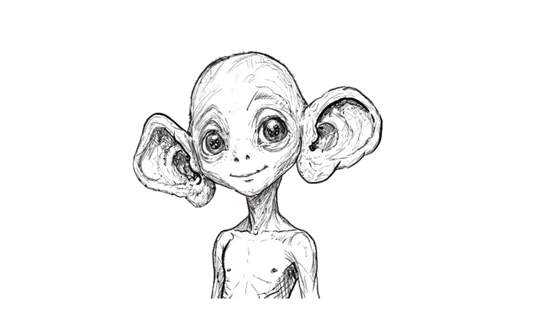

INCOMING TRANSMISSION
Build a plan that explains what your signals feel like, what other people might notice, and what actually helps you at school.
Human emotional systems appear to give warnings before things become difficult. Mine did. I ignored approximately all of them. I need your help mapping yours.